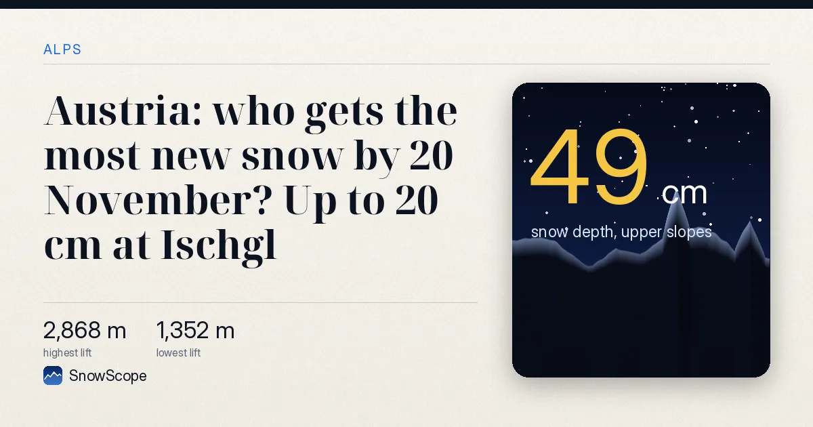

Austria: who gets the most new snow by 20 November? Up to 20 cm at Ischgl
12 of the 12 resorts we follow in Austria have snow on their upper slopes on Tuesday 17 November; Kaprun leads with 49 cm.
See the live snow forecast for Ischgl in the SnowScope appSnow depth, powder alerts and the 3D map, free.
Snow on the way
By 20 November the forecast gives Ischgl 20 cm, Serfaus Fiss Ladis 18 cm and Saalbach Hinterglemm 14 cm.
| Resort | Snow depth | New snow, 72 h | Coming, next days | Top |
|---|---|---|---|---|
| Ischgl | 25 cm | 9 cm | 20 cm | 2,868 m |
| Serfaus Fiss Ladis | 22 cm | 8 cm | 18 cm | 2,817 m |
| Saalbach Hinterglemm | 16 cm | 3 cm | 14 cm | 2,090 m |
| Kaprun | 49 cm | 5 cm | 11 cm | 3,024 m |
| Sölden | 33 cm | 6 cm | 11 cm | 3,247 m |
| Hochzillertal-Hochfügen | 30 cm | 5 cm | 10 cm | 2,374 m |

What fell in the last three days
Most new snow in 72 hours: Ischgl 9 cm, Serfaus Fiss Ladis 8 cm and Sölden 6 cm.
The top three in detail
Ischgl reports 25 cm up top; the lifts reach 2,868 m. Fresh snow: 9 cm in three days, forecast 20 cm by 20 November.
Serfaus Fiss Ladis: 22 cm on the upper slopes (top lift 2,817 m), 8 cm new in 72 hours, 18 cm more by 20 November.
Saalbach Hinterglemm: 16 cm on the upper slopes (top lift 2,090 m), 3 cm new in 72 hours, 14 cm more by 20 November.
Kaprun reports 49 cm up top; the lifts reach 3,024 m. Fresh snow: 5 cm in three days, forecast 11 cm by 20 November.
Snow on the upper slopes
Half of the 12 resorts here have more than 29 cm up top, half have less.
Behind the leader: Hintertuxer Gletscher (41 cm), Zillertal Arena (36 cm), Sölden (33 cm) and Hochzillertal-Hochfügen (30 cm).
If you have two days
Best value for two days on skis: Kaprun, with 49 cm now and 11 cm more expected by 20 November.
For a weekend, the German uplands are within a day trip by car; for Austria, plan at least three nights.
Off-piste and touring
Without new snow, stick to the groomed runs in the morning and look for softer snow on sunny slopes later. Any off-piste plan starts with the local avalanche bulletin.
Without much new snow, the groomed runs are the place to be: firm in the morning, softer by midday on the sunny side.
Tips for skiers
- Start early: the first hours give the best snow after a cold night.
- Winter tyres or chains for the last kilometres to the higher resorts.
- Off-piste only after reading the avalanche bulletin.
About these numbers
Resort snow depths are the deepest snow on the resort's upper slopes from the SnowScope snow model (about 1 km, run of 17 November); they are estimates for an area, not a measurement at one point. Station values are measurements on the date shown. Forecasts can change. Always read the official avalanche bulletin before going off-piste.
Cite this report
For research, teaching or the press: the numbers and charts are free to reuse under CC BY 4.0 with this citation.
SnowScope (2026), Austria: who gets the most new snow by 20 November? Up to 20 cm at Ischgl, https://snowscope.app/blog/en/2026/11/verse-sneeuw-oostenrijk-17-november-2026.html, accessed 2026-11-17
SnowScope (Atlas Labs). (2026, November 17). Austria: who gets the most new snow by 20 November? Up to 20 cm at Ischgl. SnowScope snow reports. https://snowscope.app/blog/en/2026/11/verse-sneeuw-oostenrijk-17-november-2026.html
BibTeX
@misc{snowscope2026versesneeuwoostenrijk17n,
author = {{SnowScope (Atlas Labs)}},
title = {Austria: who gets the most new snow by 20 November? Up to 20 cm at Ischgl},
year = {2026},
month = nov,
howpublished = {\url{https://snowscope.app/blog/en/2026/11/verse-sneeuw-oostenrijk-17-november-2026.html}},
note = {Published 2026-11-17 17:35 UTC; accessed 2026-11-17}
}· CC BY 4.0 · Methods, data and tools →
Ischgl: snow and temperature by height, this winter vs last (tools) →
Follow Ischgl
Free: a message when fresh snow is coming, and the forecast every morning.
More snow reports

Seven days in the Silvretta Arena, one at a time: where the snow is, when to cross to Samnaun, and what 46 past winters say about Ischgl's snow at three heights.

Austria before Christmas: Galtür EUR 258 and Kühtai EUR 269 for 6 days with 30 cm in over 90 % of winters; glaciers cost more, small hills are a gamble.

215 of 277 Austrian ski resorts have early-season snow on 16 November. The snow line sits at 1500 metres; expect 50 cm in the next week.